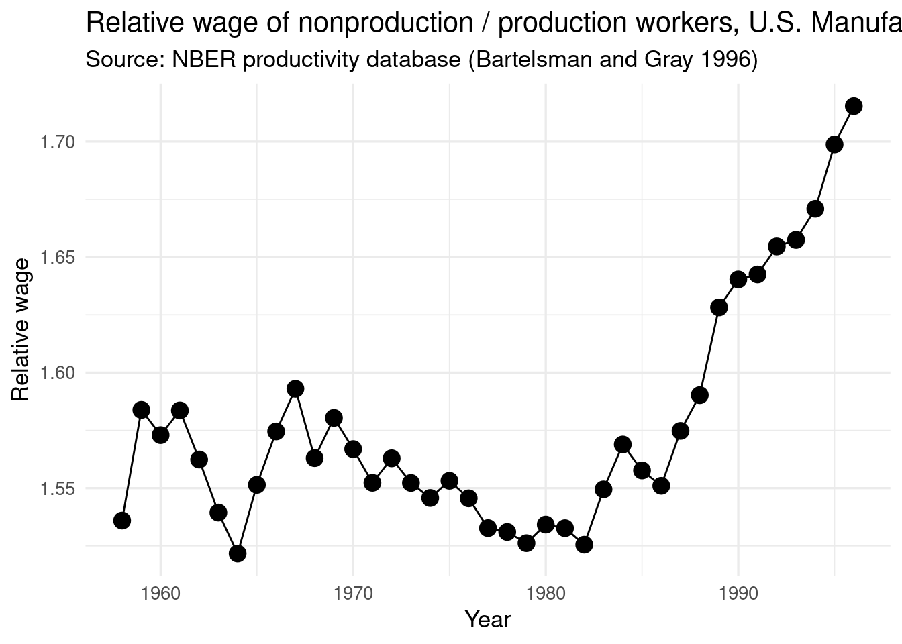

Here are some variable definitions in data file data_Chp4 to help you in the replication exercise. The variable names also give you a hint as to the naming conventions used by Feenstra & Hanson with their other variables.
Standard Industrial Classification (4-digit manufacturing)
year
Year ranges from 58 to 97
emp
Total employment in 1000s
pay
Total payroll in $1,000,000
prode
Production workers in 1000s
prodh
Production worker hours in 1,000,000
prodw
Production worker wages in $1,000,000
vship
Total value of shipments in $1,000,000
material
Total cost of materials in $1,000,000
vadd
Total value added in $1,000,000
invest
Total capital expenditure in $1,000,000
invent
End-of-year inventories in $1,000,000
energy
Cost of electric & fuels in $1,000,000
cap
Total real capital stock in $1,000,000
equip
Real capital: equipment in $1,000,000
plant
Real capital: structures in $1,000,000
piship
Deflator for VSHIP 1987=1.000
pimat
Deflator for MATCOST 1987=1.000
piinv
Deflator for INVEST 1987=1.000
pien
Deflator for ENERGY 1987=1.000
Other variables created by Feenstra and Hanson:
The prefix “a” generally denotes an average of that variable over two periods.
The prefix “d” indicates annual average change in that variable x 100.
Variable
Description
sic72
4 digit SIC code
sic2
2 digit SIC code
ptfp
primary TFP
err
error as defined in (4.26) of Chapter 4, or (3) in Feenstra and Hanson (1999)
simat1a
Share of imported materials (broad outsourcing)
simat1b
share of imported materials from inside 2-digit industry (narrow outsourcing)
diffout
= simat1a – simat1b = share of imported materials from outside 2-digit industry
imat
imported materials
amsh
average material share
aosh
average energy share
adlhw
annual change in log production wage
adlnw
annual chage in log non-production wage
adlpk
annual change in log capital price
amesh
aosh + amsh
apsh
average production share
ansh
average non-production share
aksh
average capital share
nwsh
nonproduction share of the total wages
dlpvad
change in log value-added
dlpmx
change in log material price
dlpe
change in log energy price
dlp
change in log price
dlky
change in log capital stock to real shipments ratio
dly
change in log real shipments
mvshipsh
industry share of total manufacturing shipments, averaged over the first and last period
dsimat1b
change in outsourcing (narrow); that is, change in imported inputs from the same 2-digit industry divided by total materials purchases
dsimat1a
change in outsourcing (broad); that is, imported inputs divided by total material purchases
dofsh
change in office equipment/total capital (capital=pstk x ex post rental price)
dofsh1
change in office equipment/total capital (capital=pstk x ex ante rental price)
dhtsh
change in High-tech capital/total capital (capital=pstk x ex post rental price)
dhtsh1
change in High-tech capital/total capital (capital=pstk x ex ante rental price)
ci
computer investment/total investment
Exercise 1
Download the NBER productivity dataset at http://www.nber.org/nberces/nbprod96.htm, compute the relative wage and relative employment for 1958 – 1996, and reconstruct Figure 4.1 and 4.2.
Note: Given this data, you need to first compute the wage rates in production and nonproduction sectors using the following formula (\(i\) denotes the industry):
# Packages ----library(readr)library(janitor)library(dplyr)library(ggplot2)# Download and read ----# the refered link is not available anymore# I found a backup here: https://web.archive.org/web/20051224023622/http://www.nber.org/nberces/nbprod96.htmurl <-"https://web.archive.org/web/20051224023622/http://www.nber.org/nberces/bbg96_87.txt"finp <-gsub(".*/", "first-edition/Chapter-4/", url)if (!file.exists(finp)) {download.file(url, finp)}fout <-gsub("txt", "rds", finp)if (!file.exists(fout)) { bbg96_87 <-read_csv(finp) %>%clean_names() %>%mutate(year = year +1900) %>%filter(year >=1958, year <=1996)saveRDS(bbg96_87, fout)} else { bbg96_87 <-readRDS(fout)}# Compute the wage rates in production and nonproduction sectors ----# \begin{align}# \text{Production worker wage rate} &= \frac{\sum_i \text{production worker wage bill}_i}{\sum_i \text{production workers}_i} \\# \text{Non production worker wage rate} &= \frac{\sum_i \text{non production worker wage bill}_i}{\sum_i \text{non production workers}_i} \\# &= \frac{\sum_i (\text{total pay roll}_i - \text{production worker wage bill}_i)}{\sum_i (\text{total employment}_i - \text{production workers}_i)}# \end{align}# from the NBER website# prodw Production worker wages in $1,000,000# prode: Production workers in 1000s# pay Total payroll in $1,000,000# emp Total employment in 1000s# calculated variables# pwwr: Production worker wage rate# npwwr: Non production worker wage ratewage_rates <- bbg96_87 %>%group_by(year) %>%summarise(pwwr =sum(prodw) /sum(prode),npwwr = (sum(pay) -sum(prodw)) / (sum(emp) -sum(prode)) ) %>%mutate(npwwr_pwwr = npwwr / pwwr)# Compute the relative nonproduction/production employment ----employment_rates <- bbg96_87 %>%group_by(year) %>%summarise(pemp =sum(prode),npemp =sum(emp) - pemp ) %>%mutate(npemp_pemp = npemp / pemp)# Figure 4.1: Relative wage of nonproduction / production workers ----ggplot(wage_rates, aes(x = year, y = npwwr_pwwr)) +geom_line() +geom_point(size =4) +theme_minimal(base_size =13) +labs(title ="Relative wage of nonproduction / production workers, U.S. Manufacturing",subtitle ="Source: NBER productivity database (Bartelsman and Gray 1996)",x ="Year",y ="Relative wage" )

# Figure 4.2: Relative employment of nonproduction / production workers ----ggplot(employment_rates, aes(x = year, y = npemp_pemp)) +geom_line() +geom_point(size =4) +theme_minimal(base_size =13) +labs(title ="Relative employment of nonproduction / production workers, U.S. Manufacturing",subtitle ="Source: NBER productivity database (Bartelsman and Gray 1996)",x ="Year",y ="Relative employment" )
Exercise 2
Run the STATA program Problem_4_2.do to reproduce the regressions in Table 4.4 (which is simplified from Table III in Feenstra and Hanson, 1999). Then answer:
What weights are used in these regressions?
How are the results affected if these weights are not used?
Feenstra’s code
set mem 300mlogusing c:\Empirical_Exercise\Chapter_4\log_4_2.log,replaceuse c:\Empirical_Exercise\Chapter_4\data_Chp4,cleardropifyear==1972|year==1987dropif sic72==2067|sic72==2794|sic72==3483egen wagebill=sum(pay), by(year)gen share=pay/wagebillsort sic72 yearby sic72: gen lagshare=share[_n-1]gen ashare=(share+lagshare)/2by sic72: gen lagnwsh=nwsh[_n-1]gen chanwsh=(nwsh-lagnwsh)*100/11gen wchanwsh=chanwsh*asharegen wdlky=dlky*asharegen wdly=dly*asharegen wdsimat1a=dsimat1a*asharegen wdsimat1b=dsimat1a*asharegen diffout=dsimat1a-dsimat1bgen wdiffout=(dsimat1a-dsimat1b)*asharegen wcosh_exp=dofsh*asharegen htsh_exp=dhtsh-dofshgen whtsh_exp=(dhtsh-dofsh)*asharegen wcosh_exa=dofsh1*asharegen htsh_exa=dhtsh1-dofsh1gen whtsh_exa=(dhtsh1-dofsh1)*asharegen wcosh=ci*asharegen whtsh=dhtsh*ashare* Check with the first column of Table 4.4 *tabstat wchanwsh wdlky wdly wdsimat1a wcosh_exp whtsh_exp wcosh_exa whtsh_exa wcosh whtsh, stats(sum)* Reproduce the rest of the columnsin Table 4.4 *regress chanwsh dlky dly dsimat1a dofsh htsh_exp [aw=ashare], cluster (sic2)regress chanwsh dlky dly dsimat1a dofsh1 htsh_exa [aw=ashare], cluster (sic2)regress chanwsh dlky dly dsimat1a ci dhtsh [aw=ashare], cluster (sic2)* To instead distinguish narrow and other outsourcing, we can reproduce column (1) oftable III in Feenstra and Hanson, 1999 *tabstat wchanwsh wdlky wdly wdsimat1b wdiffout wcosh_exp whtsh_exp wcosh_exa whtsh_exa wcosh whtsh, stats(sum)* Reproduce the rest of the columnsin Table III *regress chanwsh dlky dly dsimat1b diffout dofsh htsh_exp [aw=ashare], cluster (sic2)regress chanwsh dlky dly dsimat1b diffout dofsh1 htsh_exa [aw=ashare], cluster (sic2)regress chanwsh dlky dly dsimat1b diffout ci dhtsh [aw=ashare], cluster (sic2)logcloseclearexit
Output:
. set mem 300mCurrent memory allocation current memory usage settable value description (1M = 1024k) --------------------------------------------------------------------setmaxvar 5000 max. variables allowed 1.909Msetmemory 300M max. data space 300.000Msetmatsize 100 max. RHS vars in models 0.085M ----------- 301.994M. . logusing Z:\home\pacha\github\advanced-international-trade\first-edition\Chapte> r-4\log_4_2.log,replace(note: file Z:\home\pacha\github\advanced-international-trade\first-edition\Chapte> r-4\log_4_2.lognot found)----------------------------------------------------------------------------------name: <unnamed>log: Z:\home\pacha\github\advanced-international-trade\first-edition\Chapt> er-4\log_4_2.loglogtype: text opened on: 19 Jun 2024, 14:02:42. . use Z:\home\pacha\github\advanced-international-trade\first-edition\Chapter-4\da> ta_Chp4,clear(Matrl Cons (72 SIC), 67-92). dropifyear==1972|year==1987(900 observations deleted). dropif sic72==2067|sic72==2794|sic72==3483(6 observations deleted). . egen wagebill=sum(pay), by(year). gen share=pay/wagebill. . sort sic72 year. by sic72: gen lagshare=share[_n-1](447 missingvalues generated). gen ashare=(share+lagshare)/2(447 missingvalues generated). . by sic72: gen lagnwsh=nwsh[_n-1](447 missingvalues generated). gen chanwsh=(nwsh-lagnwsh)*100/11(447 missingvalues generated). . gen wchanwsh=chanwsh*ashare(447 missingvalues generated). gen wdlky=dlky*ashare(447 missingvalues generated). gen wdly=dly*ashare(447 missingvalues generated). gen wdsimat1a=dsimat1a*ashare(447 missingvalues generated). gen wdsimat1b=dsimat1a*ashare(447 missingvalues generated). gen diffout=dsimat1a-dsimat1b. gen wdiffout=(dsimat1a-dsimat1b)*ashare(447 missingvalues generated). gen wcosh_exp=dofsh*ashare(447 missingvalues generated). gen htsh_exp=dhtsh-dofsh. gen whtsh_exp=(dhtsh-dofsh)*ashare(447 missingvalues generated). gen wcosh_exa=dofsh1*ashare(447 missingvalues generated). gen htsh_exa=dhtsh1-dofsh1. gen whtsh_exa=(dhtsh1-dofsh1)*ashare(447 missingvalues generated). gen wcosh=ci*ashare(447 missingvalues generated). gen whtsh=dhtsh*ashare(447 missingvalues generated). . * Check with the first column of Table 4.4 *. . tabstat wchanwsh wdlky wdly wdsimat1a wcosh_exp whtsh_exp wcosh_exa whtsh_exa wc> osh whtsh, stats(sum)stats | wchanwsh wdlky wdly wdsim~1a wcosh_~p whtsh_~p wcosh_~a---------+----------------------------------------------------------------------sum | .3889885 .7063639 1.540769 .4225266 .2505536 .1444164 .0703266--------------------------------------------------------------------------------stats | whtsh_~a wcosh whtsh---------+------------------------------sum | .1655768 6.561565 .39497----------------------------------------. . * Reproduce the rest of the columnsin Table 4.4 *. . regress chanwsh dlky dly dsimat1a dofsh htsh_exp [aw=ashare], cluster (sic2)(sumof wgt is 1.0000e+00)Linear regression Number ofobs = 447F( 5, 19) = 6.72 Prob > F = 0.0009 R-squared = 0.1557 Root MSE = .38912 (Std. Err. adjusted for 20 clusters in sic2)------------------------------------------------------------------------------ | Robust chanwsh | Coef. Std. Err. t P>|t| [95% Conf. Interval]-------------+---------------------------------------------------------------- dlky | .0467948 .0113832 4.11 0.001 .0229695 .0706201 dly | .0197383 .0063797 3.09 0.006 .0063853 .0330912 dsimat1a | .1966658 .0962066 2.04 0.055 -.004697 .3980286 dofsh | .19534 .0915302 2.13 0.046 .0037651 .3869148 htsh_exp | -.0650465 .1371193 -0.47 0.641 -.3520404 .2219474_cons | .2028764 .0428851 4.73 0.000 .1131169 .292636------------------------------------------------------------------------------. . regress chanwsh dlky dly dsimat1a dofsh1 htsh_exa [aw=ashare], cluster (sic2)(sumof wgt is 1.0000e+00)Linear regression Number ofobs = 447F( 5, 19) = 8.01 Prob > F = 0.0003 R-squared = 0.1592 Root MSE = .38832 (Std. Err. adjusted for 20 clusters in sic2)------------------------------------------------------------------------------ | Robust chanwsh | Coef. Std. Err. t P>|t| [95% Conf. Interval]-------------+---------------------------------------------------------------- dlky | .0444529 .0113121 3.93 0.001 .0207764 .0681293 dly | .0173278 .0062906 2.75 0.013 .0041613 .0304942 dsimat1a | .2207528 .0999711 2.21 0.040 .0115109 .4299947 dofsh1 | .4309753 .1671453 2.58 0.018 .0811362 .7808144 htsh_exa | .0052436 .0712031 0.07 0.942 -.1437862 .1542735_cons | .2064394 .0397614 5.19 0.000 .1232178 .289661------------------------------------------------------------------------------. . regress chanwsh dlky dly dsimat1a ci dhtsh [aw=ashare], cluster (sic2)(sumof wgt is 1.0000e+00)Linear regression Number ofobs = 447F( 5, 19) = 11.87 Prob > F = 0.0000 R-squared = 0.1885 Root MSE = .38148 (Std. Err. adjusted for 20 clusters in sic2)------------------------------------------------------------------------------ | Robust chanwsh | Coef. Std. Err. t P>|t| [95% Conf. Interval]-------------+---------------------------------------------------------------- dlky | .0399279 .0087378 4.57 0.000 .0216396 .0582162 dly | .0100379 .0062332 1.61 0.124 -.0030084 .0230841 dsimat1a | .1346024 .0883067 1.52 0.144 -.0502257 .3194306ci | .0180834 .0066465 2.72 0.014 .0041722 .0319946 dhtsh | .0324624 .0519 0.63 0.539 -.0761655 .1410904_cons | .1569685 .0446895 3.51 0.002 .0634323 .2505048------------------------------------------------------------------------------. . * To instead distinguish narrow and other outsourcing, we can reproduce column (> 1) oftable III in Feenstra and Hanson, 1999 *. . tabstat wchanwsh wdlky wdly wdsimat1b wdiffout wcosh_exp whtsh_exp wcosh_exa wht> sh_exa wcosh whtsh, stats(sum)stats | wchanwsh wdlky wdly wdsim~1b wdiffout wcosh_~p whtsh_~p---------+----------------------------------------------------------------------sum | .3889885 .7063639 1.540769 .4225266 .1998607 .2505536 .1444164--------------------------------------------------------------------------------stats | wcosh_~a whtsh_~a wcosh whtsh---------+----------------------------------------sum | .0703266 .1655768 6.561565 .39497--------------------------------------------------. . * Reproduce the rest of the columnsin Table III *. . regress chanwsh dlky dly dsimat1b diffout dofsh htsh_exp [aw=ashare], cluster (s> ic2)(sumof wgt is 1.0000e+00)Linear regression Number ofobs = 447F( 6, 19) = 7.00 Prob > F = 0.0005 R-squared = 0.1627 Root MSE = .38794 (Std. Err. adjusted for 20 clusters in sic2)------------------------------------------------------------------------------ | Robust chanwsh | Coef. Std. Err. t P>|t| [95% Conf. Interval]-------------+---------------------------------------------------------------- dlky | .0421152 .0141103 2.98 0.008 .0125821 .0716483 dly | .0178086 .0080568 2.21 0.040 .0009456 .0346716 dsimat1b | .2454613 .1692732 1.45 0.163 -.1088315 .5997541 diffout | .121362 .0457066 2.66 0.016 .025697 .2170271 dofsh | .2060218 .1021206 2.02 0.058 -.0077192 .4197627 htsh_exp | -.0392957 .1289341 -0.30 0.764 -.309158 .2305665_cons | .206945 .0415146 4.98 0.000 .120054 .2938361------------------------------------------------------------------------------. . regress chanwsh dlky dly dsimat1b diffout dofsh1 htsh_exa [aw=ashare], cluster (> sic2)(sumof wgt is 1.0000e+00)Linear regression Number ofobs = 447F( 6, 19) = 7.37 Prob > F = 0.0004 R-squared = 0.1650 Root MSE = .38742 (Std. Err. adjusted for 20 clusters in sic2)------------------------------------------------------------------------------ | Robust chanwsh | Coef. Std. Err. t P>|t| [95% Conf. Interval]-------------+---------------------------------------------------------------- dlky | .0408212 .0141101 2.89 0.009 .0112884 .070354 dly | .0159677 .0078375 2.04 0.056 -.0004365 .0323718 dsimat1b | .2653356 .175142 1.51 0.146 -.1012407 .6319119 diffout | .1537718 .0502819 3.06 0.006 .0485307 .259013 dofsh1 | .4207269 .1707522 2.46 0.023 .0633383 .7781154 htsh_exa | .0143582 .07223 0.20 0.845 -.1368209 .1655373_cons | .2137716 .0390531 5.47 0.000 .1320326 .2955107------------------------------------------------------------------------------. . regress chanwsh dlky dly dsimat1b diffout ci dhtsh [aw=ashare], cluster (sic2)(sumof wgt is 1.0000e+00)Linear regression Number ofobs = 447F( 6, 19) = 14.96 Prob > F = 0.0000 R-squared = 0.1995 Root MSE = .37933 (Std. Err. adjusted for 20 clusters in sic2)------------------------------------------------------------------------------ | Robust chanwsh | Coef. Std. Err. t P>|t| [95% Conf. Interval]-------------+---------------------------------------------------------------- dlky | .0331274 .0119999 2.76 0.012 .0080113 .0582434 dly | .0068629 .0087795 0.78 0.444 -.0115128 .0252386 dsimat1b | .1928059 .1657117 1.16 0.259 -.1540328 .5396445 diffout | .0380044 .0539983 0.70 0.490 -.0750153 .1510241ci | .0186984 .0068931 2.71 0.014 .0042711 .0331258 dhtsh | .0519438 .0512489 1.01 0.324 -.0553214 .1592091_cons | .1612801 .0401323 4.02 0.001 .0772822 .2452781------------------------------------------------------------------------------. . logclosename: <unnamed>log: Z:\home\pacha\github\advanced-international-trade\first-edition\Chapt> er-4\log_4_2.loglogtype: text closed on: 19 Jun 2024, 14:02:47----------------------------------------------------------------------------------. . clear. exitendofdo-file
t test of coefficients:
Estimate Std. Error t value Pr(>|t|)
(Intercept) 0.1569685 0.0446895 3.5124 0.0004898 ***
dlky 0.0399279 0.0087378 4.5696 6.353e-06 ***
dly 0.0100379 0.0062332 1.6104 0.1080293
dsimat1a 0.1346024 0.0883067 1.5243 0.1281605
ci 0.0180834 0.0066465 2.7208 0.0067708 **
dhtsh 0.0324624 0.0519000 0.6255 0.5319791
---
Signif. codes: 0 '***' 0.001 '**' 0.01 '*' 0.05 '.' 0.1 ' ' 1
# Column (1) of table III in Feenstra and Hanson, 1999 ----# To distinguish narrow and other outsourcingdatachp4 %>%select(wchanwsh:whtsh) %>%summarise(across(everything(), sum, na.rm = T))
Run the STATA program Problem_4_3a.do to reproduce the regressions in Table 4.5 (i.e. Table I in Feenstra and Hansen, 1999). Then run Problem_4_3b.do to perform the two-step regression, Table IV and Table V in Feenstra and Hanson (1999). Note that Table V is obtained using the coefficients in the first column of Table IV.
set mem 3mcapturelogcloselogusing c:\Empirical_Exercise\Chapter_4\log_4_3b.log,replaceuse c:\Empirical_Exercise\Chapter_4\data_Chp4, clearkeepifyear==1990dropif sic72==2067dropif sic72==2794dropif sic72==3483gen etfp=ptfp-errgen adj1=1/(1-amesh)gen etfp1=adj1*etfpgen dlpvad1=adj1*dlpvadgen apsh1=adj1*apshgen ansh1=adj1*anshgen aksh1=adj1*akshgen t4dlpvad=(dlpvad+etfp)*adj1preserve* Reproduce the first column of Table IV ** generating difference measure of outsourcing *gen dsimatd1=dsimat1a-dsimat1b* generating difference measure of high tech share *gen dhtdsh=dhtsh-dofsh* check whether we are using the right variableas described intable II *sum dsimatd1 dhtdsh dofsh [aw=mvshipsh]regress t4dlpvad dsimat1b dsimatd1 dofsh dhtdsh [aw=mvshipsh], cluster(sic2)* Reproduce Table Vusing the coefficients in column(1) of Table IV *gen wt=mvshipsh^.5gen apsh5=apsh1*wtgen ansh5=ansh1*wtgen aksh5=aksh1*wtgen narrout=dsimat1b*wt*_coef[dsimat1b]gen diffout=dsimatd1*wt*_coef[dsimatd1]gen comsh=dofsh*wt*_coef[dofsh]gen difcom=dhtdsh*wt*_coef[dhtdsh]sum narrout diffout comsh difcomregress narrout apsh5 ansh5 aksh5, noconstantregress diffout apsh5 ansh5 aksh5, noconstantregress comsh apsh5 ansh5 aksh5, noconstantregress difcom apsh5 ansh5 aksh5, noconstantrestore* Reproduce column (2) of Table IV *preserve* generating difference measure of outsourcing *gen dsimatd1=dsimat1a-dsimat1b* generate difference measure of high tech share with ex ante rental price *gen dhtdsh1=dhtsh1-dofsh1* check whether we are using the right variableas described intable II *sum dsimatd1 dhtdsh1 dofsh1 [aw=mvshipsh]regress t4dlpvad dsimat1b dsimatd1 dofsh1 dhtdsh1 [aw=mvshipsh], cluster(sic2)* Reproduce column (3) of Table IV ** generating difference measure of high tech share *gen dhtdsh=dhtsh-dofshregress t4dlpvad dsimat1b dsimatd1 ci dhtsh [aw=mvshipsh], cluster(sic2)logcloseclearexit
Output:
. set mem 3mCurrent memory allocation current memory usage settable value description (1M = 1024k) --------------------------------------------------------------------setmaxvar 5000 max. variables allowed 1.909Msetmemory 3M max. data space 3.000Msetmatsize 100 max. RHS vars in models 0.085M ----------- 4.994M. capturelogclose. logusing Z:\home\pacha\github\advanced-international-trade\first-edition\Chapte> r-4\log_4_3b.log,replace(note: file Z:\home\pacha\github\advanced-international-trade\first-edition\Chapte> r-4\log_4_3b.lognot found)----------------------------------------------------------------------------------name: <unnamed>log: Z:\home\pacha\github\advanced-international-trade\first-edition\Chapt> er-4\log_4_3b.loglogtype: text opened on: 19 Jun 2024, 14:15:50. . use Z:\home\pacha\github\advanced-international-trade\first-edition\Chapter-4\da> ta_Chp4, clear(Matrl Cons (72 SIC), 67-92). . keepifyear==1990(1350 observations deleted). dropif sic72==2067(1 observation deleted). dropif sic72==2794(1 observation deleted). dropif sic72==3483(1 observation deleted). gen etfp=ptfp-err. gen adj1=1/(1-amesh). gen etfp1=adj1*etfp. gen dlpvad1=adj1*dlpvad. gen apsh1=adj1*apsh. gen ansh1=adj1*ansh. gen aksh1=adj1*aksh. gen t4dlpvad=(dlpvad+etfp)*adj1. preserve. . * Reproduce the first column of Table IV *. * generating difference measure of outsourcing *. . gen dsimatd1=dsimat1a-dsimat1b. . * generating difference measure of high tech share *. . gen dhtdsh=dhtsh-dofsh. . * check whether we are using the right variableas described intable II *. . sum dsimatd1 dhtdsh dofsh [aw=mvshipsh] Variable | Obs Weight Mean Std. Dev. Min Max-------------+----------------------------------------------------------------- dsimatd1 | 447 .998730832 .1598317 .3220691 -1.763297 2.735888 dhtdsh | 447 .998730832 .1281193 .1962393 -.0841524 .9744269 dofsh | 447 .998730832 .1983744 .244483 -.3634307 .8313999. . regress t4dlpvad dsimat1b dsimatd1 dofsh dhtdsh [aw=mvshipsh], cluster(sic2)(sumof wgt is 9.9873e-01)Linear regression Number ofobs = 447F( 4, 19) = 5.40 Prob > F = 0.0044 R-squared = 0.1534 Root MSE = .14521 (Std. Err. adjusted for 20 clusters in sic2)------------------------------------------------------------------------------ | Robust t4dlpvad | Coef. Std. Err. t P>|t| [95% Conf. Interval]-------------+---------------------------------------------------------------- dsimat1b | .0635024 .030585 2.08 0.052 -.0005128 .1275177 dsimatd1 | .0788136 .0472159 1.67 0.111 -.0200103 .1776375 dofsh | .1665693 .0658945 2.53 0.021 .0286505 .3044881 dhtdsh | .075982 .0722494 1.05 0.306 -.0752377 .2272016_cons | 4.262727 .0322917 132.01 0.000 4.19514 4.330314------------------------------------------------------------------------------. . * Reproduce Table Vusing the coefficients in column(1) of Table IV *. . gen wt=mvshipsh^.5. gen apsh5=apsh1*wt. gen ansh5=ansh1*wt. gen aksh5=aksh1*wt. gen narrout=dsimat1b*wt*_coef[dsimat1b]. gen diffout=dsimatd1*wt*_coef[dsimatd1]. gen comsh=dofsh*wt*_coef[dofsh]. gen difcom=dhtdsh*wt*_coef[dhtdsh]. . sum narrout diffout comsh difcom Variable | Obs Mean Std. Dev. Min Max-------------+-------------------------------------------------------- narrout | 447 .0004107 .0012838 -.0077687 .0131523 diffout | 447 .0005548 .0012192 -.0053996 .0156501 comsh | 447 .0012452 .0021439 -.0028531 .0110437 difcom | 447 .0004038 .0007386 -.0009354 .0064305. . regress narrout apsh5 ansh5 aksh5, noconstant Source | SS df MS Number ofobs = 447-------------+------------------------------ F( 3, 444) = 52.29 Model | .000211586 3 .000070529 Prob > F = 0.0000 Residual | .000598861 444 1.3488e-06 R-squared = 0.2611-------------+------------------------------ Adj R-squared = 0.2561 Total | .000810447 447 1.8131e-06 Root MSE = .00116------------------------------------------------------------------------------ narrout | Coef. Std. Err. t P>|t| [95% Conf. Interval]-------------+---------------------------------------------------------------- apsh5 | -.0095155 .0093511 -1.02 0.309 -.0278934 .0088624 ansh5 | .0986666 .0147744 6.68 0.000 .0696303 .127703 aksh5 | .0026378 .003536 0.75 0.456 -.0043116 .0095872------------------------------------------------------------------------------. regress diffout apsh5 ansh5 aksh5, noconstant Source | SS df MS Number ofobs = 447-------------+------------------------------ F( 3, 444) = 44.65 Model | .000185525 3 .000061842 Prob > F = 0.0000 Residual | .000615016 444 1.3852e-06 R-squared = 0.2317-------------+------------------------------ Adj R-squared = 0.2266 Total | .000800542 447 1.7909e-06 Root MSE = .00118------------------------------------------------------------------------------ diffout | Coef. Std. Err. t P>|t| [95% Conf. Interval]-------------+---------------------------------------------------------------- apsh5 | .0203644 .0094764 2.15 0.032 .0017403 .0389885 ansh5 | .0628478 .0149723 4.20 0.000 .0334224 .0922732 aksh5 | -.0011399 .0035834 -0.32 0.751 -.0081824 .0059026------------------------------------------------------------------------------. regress comsh apsh5 ansh5 aksh5, noconstant Source | SS df MS Number ofobs = 447-------------+------------------------------ F( 3, 444) = 153.17 Model | .001395044 3 .000465015 Prob > F = 0.0000 Residual | .001347998 444 3.0360e-06 R-squared = 0.5086-------------+------------------------------ Adj R-squared = 0.5053 Total | .002743042 447 6.1366e-06 Root MSE = .00174------------------------------------------------------------------------------ comsh | Coef. Std. Err. t P>|t| [95% Conf. Interval]-------------+---------------------------------------------------------------- apsh5 | -.0049722 .0140295 -0.35 0.723 -.0325447 .0226004 ansh5 | .2480141 .0221661 11.19 0.000 .2044505 .2915777 aksh5 | .0007009 .0053051 0.13 0.895 -.0097253 .0111272------------------------------------------------------------------------------. regress difcom apsh5 ansh5 aksh5, noconstant Source | SS df MS Number ofobs = 447-------------+------------------------------ F( 3, 444) = 68.02 Model | .000099567 3 .000033189 Prob > F = 0.0000 Residual | .000216627 444 4.8790e-07 R-squared = 0.3149-------------+------------------------------ Adj R-squared = 0.3103 Total | .000316194 447 7.0737e-07 Root MSE = .0007------------------------------------------------------------------------------ difcom | Coef. Std. Err. t P>|t| [95% Conf. Interval]-------------+---------------------------------------------------------------- apsh5 | .0259448 .0056241 4.61 0.000 .0148915 .036998 ansh5 | .0069214 .0088859 0.78 0.436 -.0105422 .0243851 aksh5 | .0043305 .0021267 2.04 0.042 .0001509 .0085102------------------------------------------------------------------------------. . restore. . * Reproduce column (2) of Table IV *. . preserve. . * generating difference measure of outsourcing *. . gen dsimatd1=dsimat1a-dsimat1b. . * generate difference measure of high tech share with ex ante rental price *. . gen dhtdsh1=dhtsh1-dofsh1. . * check whether we are using the right variableas described intable II *. . sum dsimatd1 dhtdsh1 dofsh1 [aw=mvshipsh] Variable | Obs Weight Mean Std. Dev. Min Max-------------+----------------------------------------------------------------- dsimatd1 | 447 .998730832 .1598317 .3220691 -1.763297 2.735888 dhtdsh1 | 447 .998730832 .1643722 .1506561 .0204334 .9001704 dofsh1 | 447 .998730832 .0534329 .124323 -.2700591 .3795505. . regress t4dlpvad dsimat1b dsimatd1 dofsh1 dhtdsh1 [aw=mvshipsh], cluster(sic2)(sumof wgt is 9.9873e-01)Linear regression Number ofobs = 447F( 4, 19) = 2.42 Prob > F = 0.0844 R-squared = 0.1089 Root MSE = .14898 (Std. Err. adjusted for 20 clusters in sic2)------------------------------------------------------------------------------ | Robust t4dlpvad | Coef. Std. Err. t P>|t| [95% Conf. Interval]-------------+---------------------------------------------------------------- dsimat1b | .0795164 .034676 2.29 0.033 .0069387 .1520942 dsimatd1 | .11368 .0440198 2.58 0.018 .0215455 .2058144 dofsh1 | .1924159 .1083624 1.78 0.092 -.0343891 .4192209 dhtdsh1 | -.0477944 .0820494 -0.58 0.567 -.2195258 .1239369_cons | 4.294261 .0385949 111.27 0.000 4.213481 4.375041------------------------------------------------------------------------------. . * Reproduce column (3) of Table IV *. . * generating difference measure of high tech share *. . gen dhtdsh=dhtsh-dofsh. . regress t4dlpvad dsimat1b dsimatd1 ci dhtsh [aw=mvshipsh], cluster(sic2)(sumof wgt is 9.9873e-01)Linear regression Number ofobs = 447F( 4, 19) = 5.96 Prob > F = 0.0028 R-squared = 0.2129 Root MSE = .14002 (Std. Err. adjusted for 20 clusters in sic2)------------------------------------------------------------------------------ | Robust t4dlpvad | Coef. Std. Err. t P>|t| [95% Conf. Interval]-------------+---------------------------------------------------------------- dsimat1b | .0404059 .0295213 1.37 0.187 -.0213829 .1021947 dsimatd1 | .0351687 .0488208 0.72 0.480 -.0670145 .1373518ci | .0081792 .0045064 1.82 0.085 -.0012528 .0176112 dhtsh | .093074 .0496036 1.88 0.076 -.0107475 .1968955_cons | 4.243861 .0334856 126.74 0.000 4.173775 4.313947------------------------------------------------------------------------------. . logclosename: <unnamed>log: Z:\home\pacha\github\advanced-international-trade\first-edition\Chapt> er-4\log_4_3b.loglogtype: text closed on: 19 Jun 2024, 14:15:52----------------------------------------------------------------------------------. clear. . exitendofdo-file
# there is no equivalent to the Stata command "preserve" in R# therefore, I make a copy of the data and drop the observationsdatachp4_2 <- datachp4 %>%filter(sic72 !=3573)reg2 <-lm( dlp34 ~ ptfp + apsh + ansh + aksh,data = datachp4_2,weights = datachp4_2$mvshipsh)coeftest(reg2, vcov =vcovHC(reg2, type ="HC1"))